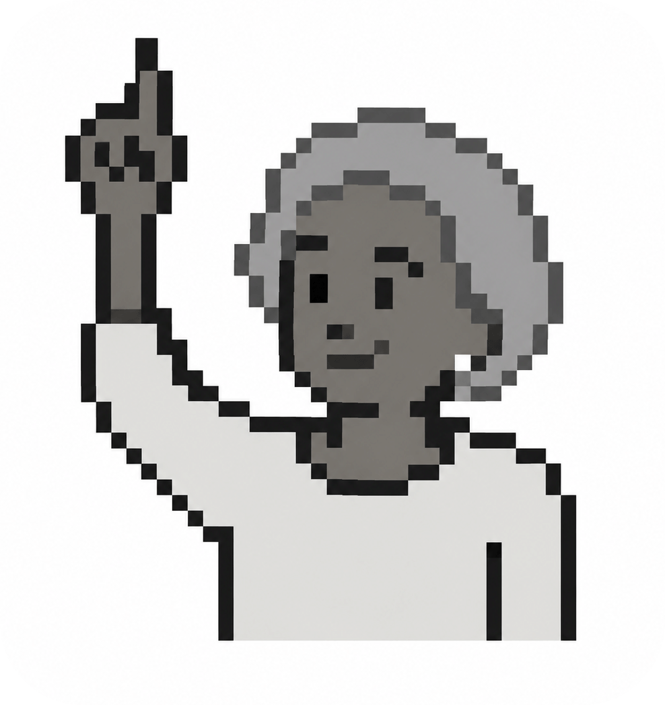

Importe um DOCX ou use o botão Colar texto para iniciar a conferência de referências.
Importe um DOCX ou use o botão Colar texto para começar.

Conferência de citações autor-data e lista final de referências.
Importe um DOCX ou use o botão Colar texto para iniciar a conferência de referências.